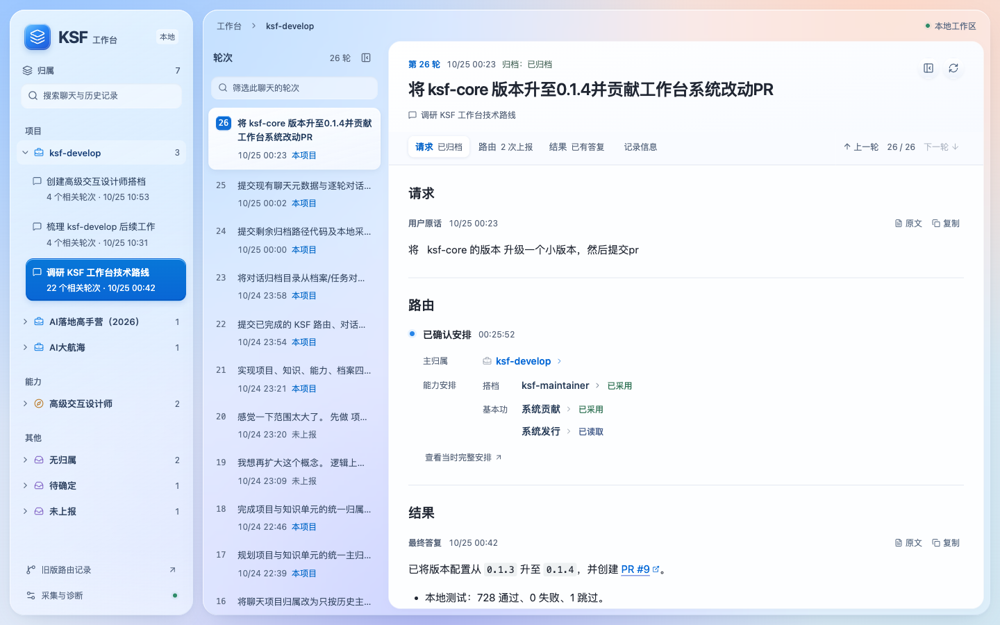
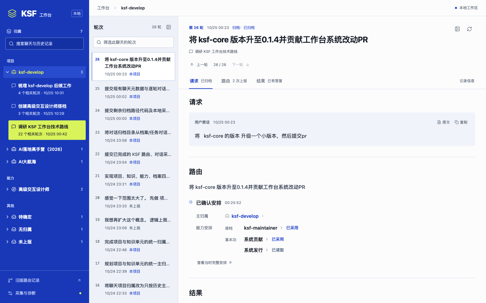

<!doctype html><html lang="zh-CN"><meta charset="utf-8"><meta name="viewport" content="width=device-width,initial-scale=1"><title>KSF 工作台 · 材质重设计</title><style>*{box-sizing:border-box}body{margin:0;padding:32px;background:#eaf0fa;color:#25364e;font:15px/1.6 -apple-system,BlinkMacSystemFont,"PingFang SC",sans-serif}header{max-width:1440px;margin:auto auto 24px}h1{margin:0;font-size:28px}p{margin:8px 0 16px;color:#52637e}a{color:#0066d6;text-underline-offset:4px}main{max-width:1440px;margin:auto;display:grid;gap:28px}figure{margin:0}figcaption{margin-bottom:10px}img{display:block;width:100%;border-radius:16px;box-shadow:0 12px 36px -16px #24456e40}</style><header><h1>KSF 工作台 · 材质重设计</h1><p>已按新的明确方向改为磨砂玻璃导航、蓝色高光控件和白色文稿。此前三版冷淡概念已停止推进；下方是同一真实轮次的实际实现对照。</p><a href="http://127.0.0.1:4173/?target=current%3Aksf-develop&amp;task=93a2a67f311f0056186f4edf92c0a78299cfc0db32fc45631258c96dea88c311&amp;turn=01a16eb9-7ded-7622-b602-acb4449673ad">打开可操作的新工作台 →</a></header><main><figure><figcaption>当前实现 · 玻璃材质与白色文稿</figcaption></figure><figure><figcaption>上一版 · 已被否决的钴蓝与荧黄</figcaption></figure></main></html>